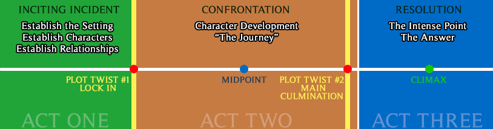
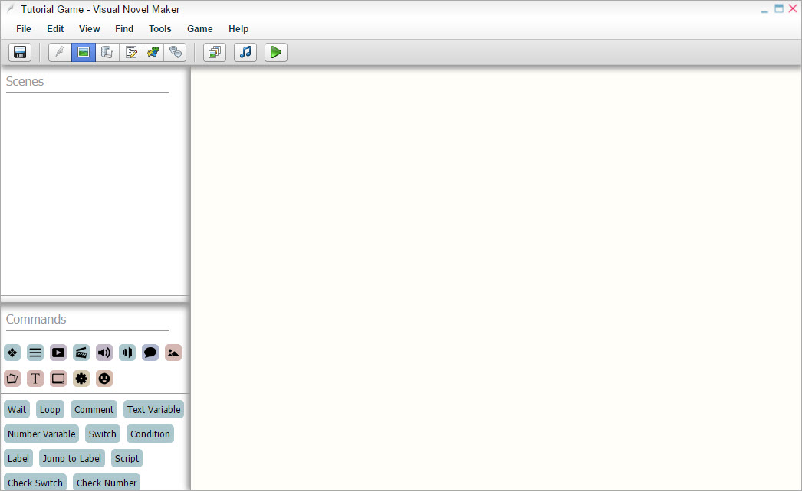
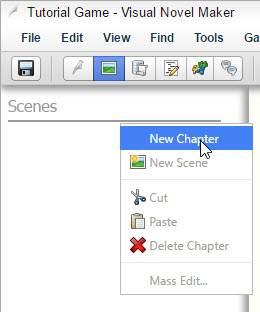
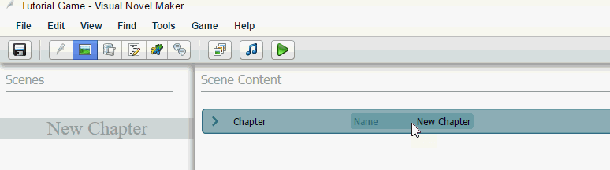
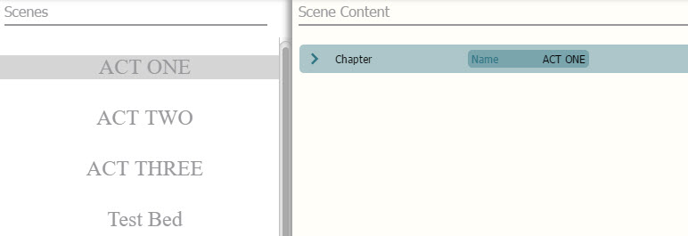
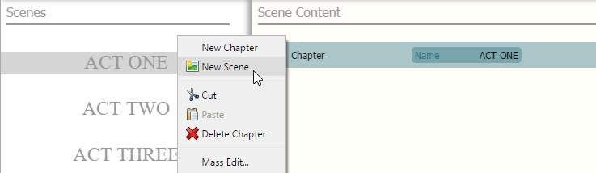
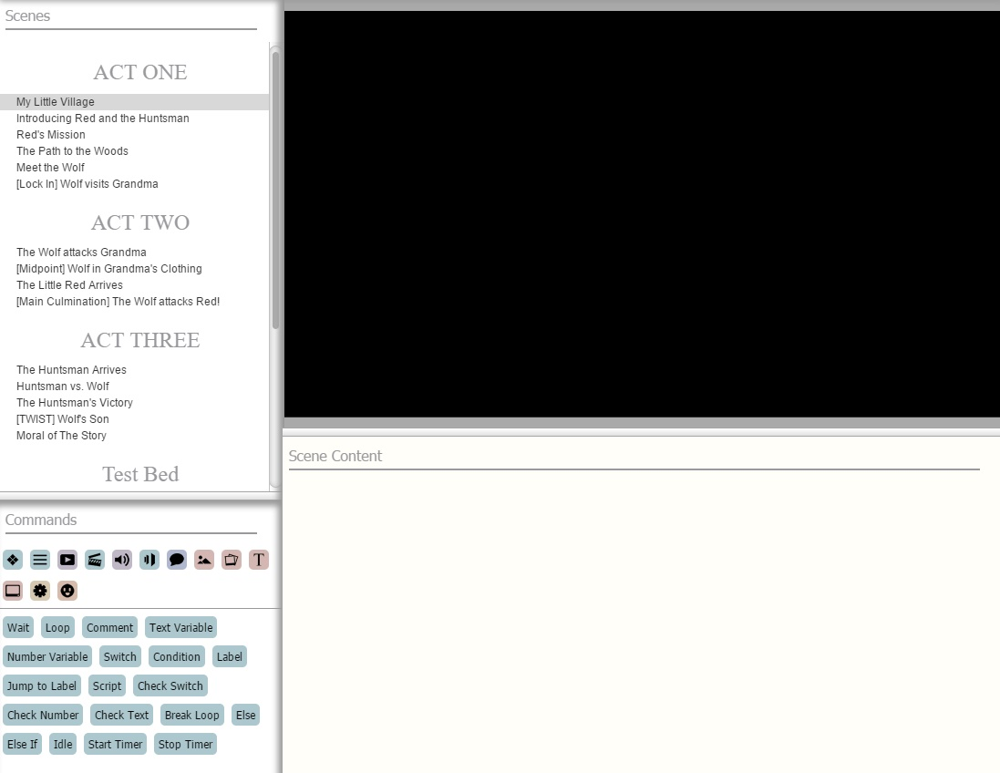
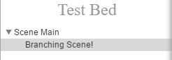

增加章节和场景
增加章节和场景非常简单。你可以把章节当作场景的文件夹。
很重要的一点是，我们需要将我们的故事分解成小块。为了理解我在说啥，我们将用小红帽作为样例来学习三幕式结构（Three Act Structure）。 （译者：据我所知，这应该是剧本的一种写作格式，类似于八股文，一般由开端、对抗和结局这三幕组成）我们不会实际去做一个小红帽的游戏，这仅仅是为了解释如何分解一个简单的故事。

第一幕：激励（INCIDING INCENT）
场景 1:我的小村庄
场景 2:介绍小红帽和猎人
场景 3:小红帽的任务
场景 4:通往树林的路
场景 5:遇到大灰狼
场景 6 -- (LOCK IN):大灰狼到了奶奶家
第二幕: 冲突（CONFRONTATION）
场景 7:大灰狼袭击奶奶
场景 8 -- (MIDPOINT): 大灰狼穿着奶奶的衣服开始独白，自述自己的诡计
场景 9:小红帽最终到达奶奶家，然后描述奶奶的新特征
场景 10 -- (MAIN CULMINATION):大灰狼袭击小红帽！
第三幕: 矛盾解决（RESOLUTION）
场景 11:猎人到达.
场景 12 -- 高潮(CLIMAX):猎人与大灰狼搏斗
场景 13:猎人获胜，并安全地救出小红帽，然后一起回家。
如果你想严格遵循五个关键时刻
场景 14 -- (THIRD ACT TWIST):狼的儿子发誓要报复猎人
场景 15:故事的寓意
你可能会想知道为什么每章有多个场景。这主要有两个原因：
把它们分解成这样的场景会帮助你更容易改变思维，重新安排故事的结构。
修复问题或者找bug会更轻松
现在我们有了清晰的情节大纲，我们可以继续下一步了！
实施
在这个实例中，我删除了所有内容。你也可以从一个空项目开始。这样一来，没有其他场景包含在内，你可以看到我们如何从头开始制作它们。项目文件将如下所示：

创建章节
首先我们将创建一个章节。你可以把它看作是一个包含所有场景的文件夹。虽然它们是不必要的，但它们会使你的项目有条理！

创建了一个章节后，只需点击“新建章节”，然后在名称框内重新命名章节。

到最后，这个项目看起来会像这样：

如您所见，我添加了一个额外的章节称为“测试床”。这个章节的目的是在其中插入场景，用于测试特定功能，而不会破坏所有其他最终场景或使重要章节混杂无用的场景。您也可以将其视为沙盒、调试空间或开发者的游乐场。这对于组织目的是一个很好的实践！
开始创作：创建场景
现在我们已经创建了章节，是时候插入场景了 这是游戏中大部分动作发生的地方。你必须有章节才能创建场景。
选择章节
右击Chapter然后点New Scene.

你会看到一个名为场景属性的窗口。只需阅读页面，获取有关该窗口的所有信息。
创建完您的场景后，最终可能会看起来像这样。

现在我们已经准备好开始添加角色和其他内容了！您可以查看我们的导入资源教程来导入您自己的定制内容。
Note:
你可以将场景放在场景下面，就像这样！

* 这在使用调用场景命令时非常有用。